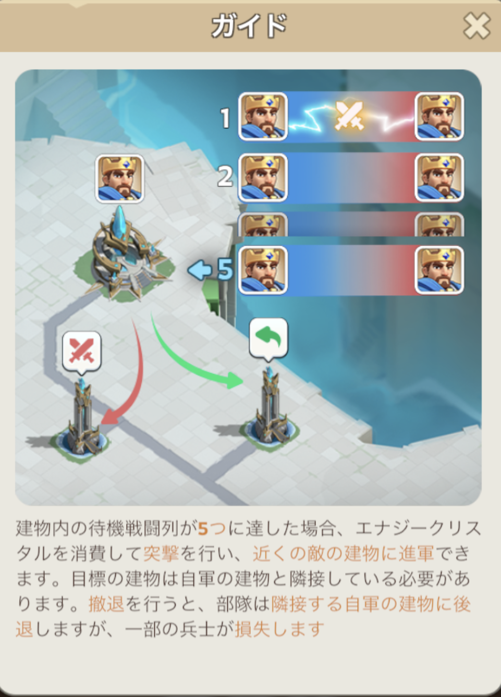
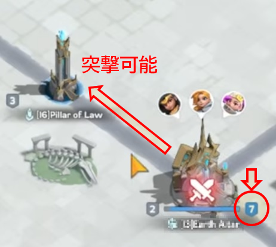
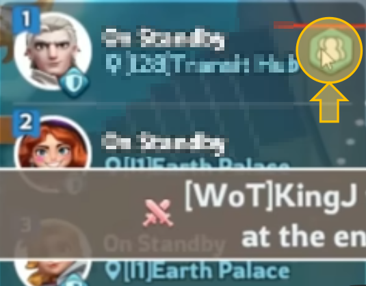

１．戦闘の基本構造：キュー制
拠点ごとに「待機列（キュー）」が作られ、到着順に 1対1の自動バトル が繰り返される仕組みです。
- 攻撃側・防御側が到着順に1対1で戦う
- 1試合は 10秒（神殿などは5秒）
- 勝った部隊は待機列の最後尾へ、負けた部隊は本拠地へ戻る
ラリー（集結攻撃）は存在しません。英雄の強さやバフが直接勝敗を左右する、ソロ部隊同士の連戦です。
この仕組みを前提に、待機列が5列以上になると使える2つの上級アクション「突撃」と「撤退」が解放されます。

２．突撃（Advance）：攻めの再配置
待機列5列目以降の部隊を、クリスタルを消費して次の建物へ直接送り込むアクションです。

できること
- 前の拠点の決着を待たずに、次の拠点を先に攻め始められる
- 敵が撤退して回復する隙を与えず、再参戦を防げる
- 敵の背後に回って増援ルートを断てる
注意点：
突撃先ですぐ撃破されると、クリスタル＋復活コストで逆効果になります。ある程度粘れる部隊で使うのが基本です。
３．撤退（Retreat）：守りの再整備
待機列5列目以降の部隊を、クリスタルを消費して1つ手前の建物へ下げるアクションです。「逃げ」ではなく、戦力を立て直して再投入するための積極的な選択です。
できること
- 戦闘外の建物に下がることで徴兵（即時フル回復）が可能になる
- 全滅前に撤退することで、復活待ち＋再移動のロスを回避できる
- 占拠タイミングの調整：最後の衛兵を倒す順番を意図的にずらし、狙った部隊に占拠権を渡せる
運用のコツ
主力部隊が損耗してきたら撤退→徴兵→再参戦のサイクルを回すのが基本。その間、2軍・3軍が時間を稼ぐ連携が効果的です。

４．突撃と撤退を組み合わせる
2つのアクションは、セットで使うことで真価を発揮します。
- 主力が撤退して回復している間に、別部隊が突撃してラインを維持する
- 相手も撤退・回復を繰り返して泥試合になりそうな場合は、突撃で敵の回復場所を奪う
どちらか一方だけでなく、状況に応じて使い分けることが戦線維持のカギです。